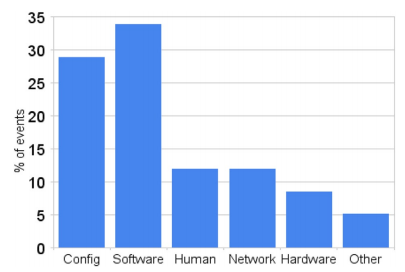

For datacenters to be considered reliable, the services provided need to be available to its users at all times, the less downtime the better, so datacenters need to ensure that their systems do not fail and are able to operate continuously for a long period of time. Although this may be possible in theory, with the number of servers involved, preventing all failures is not plausible, or in the least, it would be extremely expensive to accomplish this. The solution is to configure the software so that it will be able to work around failures, to keep running despite the failure of its components, we say the software is fault-tolerant.
Service-level failures can be separated into four main categories as follows, from least to most severe:
- Masked which are faults caught by fault-tolerant software and which are only visible to the service provider;
- Degraded, where the service is still available but in reduced quality (e.g. increased response time, imperfect but still acceptable results), this is referred to as graceful degradation;
- Unreachable is when the service is not available to users, this can hurt Internet service revenue as it is related to traffic volume;
- Corrupted, at which point data is lost and/or corrupted, it is in particular damaging if it cannot be recovered (e.g. user data, operational logs).
Cost and Causes of Failures
In a census conducted by Jim Gray in the 90s, it was found that machine crashes in datacenters were most commonly caused by software faults, with them being the source of roughly 60% of experienced outages, whereas the other 20% were induced by maintenance and operation errors and disk and memory faults made up less than 10% of reported outages[1].
Figure 1 shows disruption data collected by Google's Robert Stroud in a timeframe of 6 months, and categorized by its source. We can see that a big percentage of the failures were due to software malfunctions whereas only 8% were due to hardware faults.

Figure 1: Distribution of service disruption events by most likely cause at one of Google's main services[2].
The cost of failures are generally thought to be very high, in particular if it’s non-hardware induced, because once a failure occurs, it tends to spread rapidly to other systems, causing disruptions to several cloud services, including those not directly affected by the error, and their users. For instance, in April 2011, AWS experienced service disruption due to a read/write operation fault in a single location which in turn affected other systems trying to access it[3].
When a machine is being repaired, not only is it out of commission and lowers the availability of the services provided by the datacenter, but it also requires replacements parts and skilled labour, which can be costly especially whether the repair actually fixes the problem.
It is therefore imperative for softwares to not only be able to be able to deal with individual faults but also reduce the impact of the problem while it is fixing it, especially considering identifying the issue and repairing it can be time-consuming. So recovering from a failure is a four-step process : 1) detection; 2) mitigation; 3) diagnosis; and 4) repair[4]. In the case that the failure is too damaging or repair takes an unreasonable amount of time, a better solution would be to use roll-back recovery, to have the system revert to an earlier, correct version of itself.
Fault-tolerance
Fault tolerance is achieved by predicting any potential faults based on the machine’s behaviour and designing the program to deal with them, this is usually based on the concept of redundancy. This property is especially useful when it can catch most cases of failures with a low false-positive rate. But in reality, predictions are unlikely to be 100% effective. The issue stems from the fact that not all problems can be predicted. In particular, outages related to weather/natural disasters[5] [6] or cyber crimes are hard to prevent.
Variations in log messages are also a source of the inaccuracy. This could be due to different message formats from using devices from different manufacturers; or time delays between message collection from different device which would cause messages to be in a different order than they were created, so if the fault detection system relies on the order of messages, it would not be reliable in this situation; softwares/machines upgrades and replacements can also render the analysis outdated. According to Y. Watanabe et al, prediction can be improved using message classification by similarity, regardless of format, and pattern learning; a test carried out in a real datacenter showed results of 80% precision[7].
Hardware faults
As for hardware related errors, it is generally not easy to differentiate between them and OS or firmware bugs. But according to an investigation into sources of machine crashes, the most common cause were DRAM soft-errors where approximately 1.3% of machines, which had error correcting codes installed, were affected by irreparable errors within one year; and disk errors, with less than 3.5% of the drives experiencing failure in a time frame of 32 months[8]. Usually, when new products are introduced to the system, machines would experience a higher number of crashes and restarts in the few following months compared to the rest of the times.
Combining the number of servers used with the fault-tolerant software, the need for frequent repairs is not as crucial in order to keep the datacenter running continuously. Despite this, servers still need to be closely monitored because although they may appear to be working perfectly, it’s possible that, internally, they're on the brink of a breakdown.